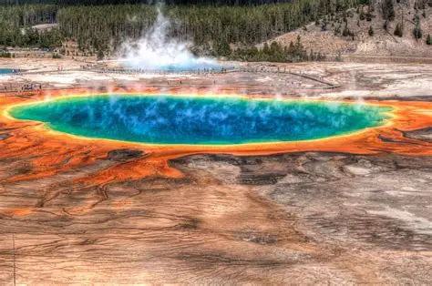
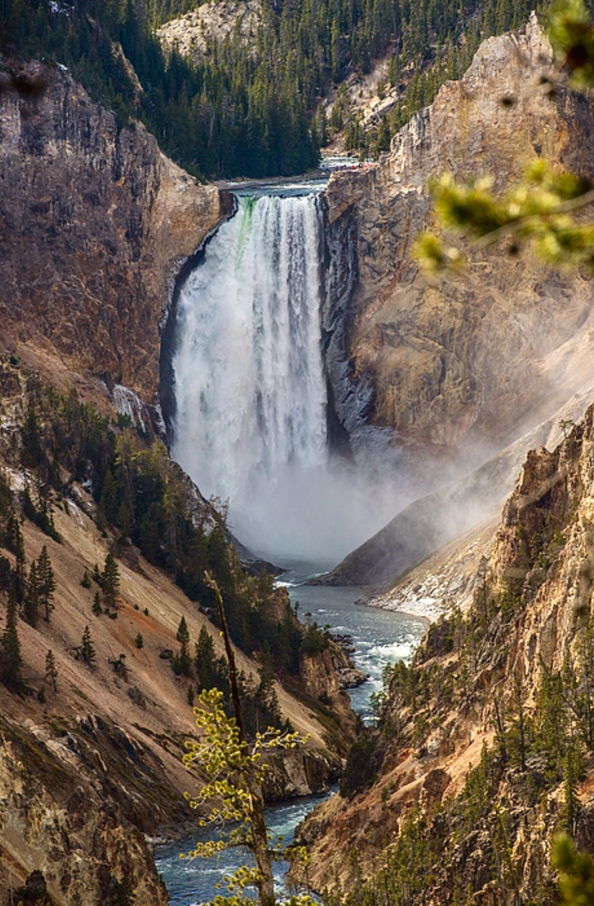

Geysers & Hot Springs
Watch Old Faithful erupt and see the rainbow colors of Grand Prismatic Spring.
Explore geysers and hot springs
Bubbling hot springs, roaming bison, and thundering waterfalls. Discover what makes Yellowstone one of a kind.
Start Planning Your TripEstablished in 1872, Yellowstone was the first national park in the United States. It covers more than two million acres, mostly in Wyoming, with parts reaching into Montana and Idaho. The park sits on top of a volcanic hot spot, which powers more than 10,000 hydrothermal features, including geysers, hot springs, mud pots, and steam vents.
Beyond its geysers, Yellowstone is home to bison, elk, wolves, and grizzly bears, along with a canyon and waterfalls that rival any in the country. Use this guide to choose what to see and to plan your visit.

Watch Old Faithful erupt and see the rainbow colors of Grand Prismatic Spring.
Explore geysers and hot springs
Spot bison, elk, and maybe even wolves in the open meadows of Lamar Valley.
Explore wildlife viewing
Stand at the edge of the Grand Canyon of the Yellowstone and see the Lower Falls.
Explore the canyonRequest a free trip planner and count down the days until your visit.
Plan Your Trip